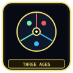
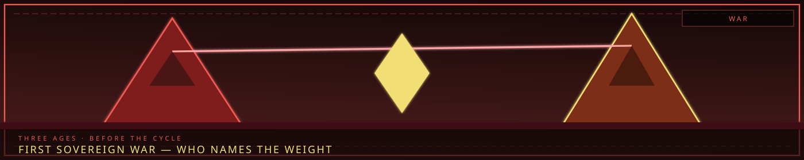

First warWho names the weight
/// RAPID JUMP:
STATUS: ARCHIVE VERIFIED |
CLEARANCE: LEVEL-4 OVERSIGHT |
PROTOCOL: REVERIE DIRECTORATE
ARTICLE
DISCUSSION
SOURCE
HISTORY
YEAR 4,238 · DAWN OF HOPE
LORE · HISTORY · 202–245
The Wars of Somnarak
“The first war was not for land. It was for who got to name the weight.”

Overview
There was no “First Sovereign War” against “Old Dreamers” and “Founding Corporations.” That overlay was wiki invention. Canon wars from History:
| War | Name | Cause | Outcome |
|---|---|---|---|
| 1st | The Cheongula (천구라) | Han consumed 1,000 citizens | Proof the city is alive and hungry. The Maw. |
| 2nd | The Occlusihan (오클루시한) | Six factions tried to seal Han | Failed. Han grew. Fracture emerged. |
| 3rd | The Consolihan (결한 전쟁) | Destabilized accumulation | Solidification. The Alpha Tree. Fortress of frozen tears. |
| 4th (?) | The Third Conflict | Preservation vs reform | Council fatalism — or an ongoing cold war. |
Time is counted ~6,000 years from the first Zone B settlement. Cheongula year 202. Occlusihan 202–223. Interim 223–234. Consolihan 234–245. Structuring 245–281. SED ~4200. Directorate 4202. Present Dawn Initiative ~4232–4238. Full Cheongula article: the Cheongula. Ages: three ages.
Cheongula — the First Sorrow
Korean Cheon (천 — thousand) + Latin gula (throat, maw). The Maw of the Thousand. “We thought the walls were just cold. We didn’t know they were starving.”
Early settlers treated Han as inert metaphysical concrete. One night in mid-layer Zone B the accumulation of unresolved grief went critical. Streets, beams, walls softened into black tar. Exactly 1,000 citizens were dragged down, digested, assimilated — bodies, memories, loves, terrors broken into structural material. When the tar re-solidified, the buildings had new jagged shapes and the concrete whispered.
What it proved: Han is hungry, living, predatory. The city consumes people to stay standing. The site is now the Maw. This page is the war that followed. The incident itself stays on its own article.
Occlusihan — the First War
Latin occlusio (to shut) + Han. The War to Seal the Grief. After the Cheongula, the populace realized they were living inside a cage that was slowly eating them. Panic bred fanaticism. Six early factions — corporate, religious, militaristic — rose. They disagreed on how. They agreed on one desperate goal: close, seal, or sever the flow of Han entirely. They fought in Zone B, and they fought the city itself. Han answered — growing, shifting, consuming.
| Faction | Approach | Outcome |
|---|---|---|
| Sealers | Walls, barriers, physical block | Pressure points. Han erupted. |
| Severers | Cut Han from people — emotional suppression | Numb zones. Fracture hotspots. |
| Offerers | Sacrifice, ritual, feed it willingly | Han grew stronger. |
| Exilers | Push grief into Dream or Abyss | Rifts between realms. |
| Converters | Transmute Han into something else | Partial success. Ancestor of Architect practice. |
| Endurers | Accept hunger. Learn to live with it | Ancestor of Council fatalism. |
Nobody won. Twenty-one years. Exhaustion became the Consolihan. Lesson filed by every later Head: fighting Han directly feeds it; severing it Fractures people; feeding it makes it hungrier. Working with it is the only partial success. Remembered as: “We tried to kill the sorrow. The sorrow ate us instead.” RD, SED, and UCD are Year 4,200 operations, not these six.
Consolihan
Latin consolidare + Han. The Solidification of Grief. Not a war against an army. A war to freeze a tide. “In the beginning, Han was a fluid, rising tide that threatened to drown us all. During the Consolihan, they learned how to freeze the water, building a fortress out of our frozen tears. The Alpha Tree is simply the tallest pillar.”
After Occlusihan the six interventions had wrecked Han’s (predatory) flow. Sorrow pooled into rivers, flooded valleys, ate settlements. Survivors tried release-rituals, offerings to Dream, pleas to Abyss. Nothing worked. Then they combined Converter technique with Endurer philosophy and tried to solidify it — freeze flowing sorrow into something that could be shaped, contained, managed.
It worked, not as planned. Han did not freeze into inert material. It crystallized into meaning. Grief, love, dream, nightmare, happiness, sadness poured into the solidifying Han. Where feeling gathered hardest, the Alpha Tree grew — not a building, a cumulation. Sigh Palace weeps. Six buildings hold. Spire of Dreams reaches. Abyssal Well drops. Archive light is rare. Crucible weight anchors.
The city grew around the Tree the way crystal grows on crystal. Taboos were first codified after this war; Giltong exist because Consolihan proved the city needed an immune system, not just walls. Calendar-zero for civic structure sits here. See Alpha Tree and Zone A.
Timeline
| Year | Event | Zone |
|---|---|---|
| ~0 | First settlement around Han pools | B |
| ~0–202 | Before-Time — Han flowing, structures from necessity | B |
| 202 | Cheongula — 1,000 consumed | B (Maw) |
| 202–223 | Occlusihan — 21 years | B |
| 223–234 | Interim — accumulation catastrophic | All |
| 234–245 | Consolihan — Solidification, Tree | A |
| 245–254 | Zone C constructed | C |
| 254–267 | Zone D built to contain B’s chaos | D |
| 267–281 | Zone E fortified; city complete | E |
| ~4200 | SED decreed | All |
| 4202 | Reverie Directorate founded | A |
| ~4232–4238 | Present / Dawn Initiative | All |
Durations: Before-Time ~202 years. The Wars 43 years (202–245). Structuring 36 years (245–281). Long Era ~3,900 years (281–4200) — working centuries; faction betrayals of Years 2,200–4,200 accumulate here. Current era from 4202. Discard: Old Dreamers, Founding Corporations as precursor Wings, Nine Veiled Edicts as LC seed-of-light copy. Use the three operations for R.D./SED/UCD.